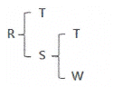
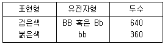
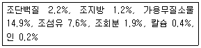
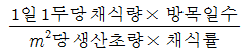
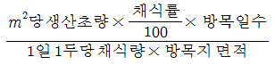
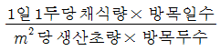
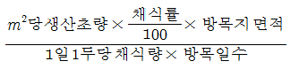
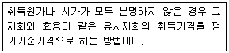

축산기사 (2014-09-20 기출문제)
1과목: 가축육종학
1. R의 가계도가 다음과 같을 때 R의 근교계수는? (단, FA=0)

- 0.10
- 0.25
- 0.50
- 0.75
(정답률: 87%)

2. 어느 수소를 검정하였더니 일당 증체량이 1300g 이었다. 한우의 일당 증체량 평균이 900g이고 일당 증체량의 유전력이 0.40이라면 이 소의 육종가는?
- 160g
- 360g
- 1060g
- 1460g
(정답률: 67%)
3. 생물에 대한 인위적인 돌연변이 유발원 물질들은 비교적 많은 편이다. 실용성이 가장 떨어지는 물질은?
- 자외선
- 초음파
- proton
- colchicine
(정답률: 71%)
4. 유전력 추정치가 높은 수치로 나타날 수 잇는 조건이 아닌 것은?
- 환경변이의 최소화
- 유전변이의 극대화
- 상가적 분산의 최대화
- 환경변이의 최대화
(정답률: 71%)
5. hen-day rate of egg production을 옳게 설명한 것은?
- 일정기간의 총산란수를 기간 내 매일 생존 암탉수로 나눈것
- 일정기간의 총산란수를 그 기간 최초의 암탉수로 나눈 것
- 일정기간의 총산란수를 마지막 날의 생존 암탉수로 나눈 것
- 일정기간의 총산란수를 기간 중간날의 생존 암탉수로 나눈 것
(정답률: 46%)
6. 육용계(재래닭 제외)의 경제형질과 가장 거리가 먼 것은?
- 성장률
- 사료효율
- 도체율
- 8주 체중
(정답률: 74%)
7. 1000마리의 앵거스(Angus)소에 대한 모색을 조사한 결과가 아래와 같을 때 붉은색에 대한 유전자 빈도는 얼마인가? (단, 유전적 평형상태를 가정한다.)

- 0.4
- 0.6
- 0.8
- 1.0
(정답률: 79%)
8. 서로 다른 유전자좌위에 있는 비대립 유전자간의 상호작용에 따른 유전현상에 해당하는 것은?
- 완전우성
- 상위유전자작용
- 공우성
- 복대립유전자작용
(정답률: 54%)
9. 돼지의 경제형질에 해당하지 않는 것은?
- 복당 산자수(litter size)
- 이유시 체중(weaning weight)
- 이유 후 성장률(post-weaning growth rate)
- 유량(milk yield)
(정답률: 88%)
10. 폐쇄된 집단내에서 선발을 실시할 때 근교계수의 상승을 낮게 하는데 가장 효과적인 선발방법은?
- 후대검정
- 가계선발
- 가계내선발
- 상반반복선발
(정답률: 61%)
11. 젖소에서 많이 이용되는 교배 방법은?
- 근친교배
- 이계교배
- 계통교배
- 잡종교배
(정답률: 51%)
12. 변이의 크기를 나타내는 방법이 아닌 것은?
- 평균
- 분산
- 범위
- 표준편차
(정답률: 79%)
13. 소의 이성쌍태(異性雙胎)에 있어서 암컷에 나타나는 이상(異商)으로 이를 프리마틴(Freemartin) 이라고 하는데 성의 형태는 어떤 것인가?
- 자성(雌性)
- 웅성(雄性)
- 간성(間性)
- 우성(優性)
(정답률: 74%)
14. 돼지에 있어서 백색인 요크서(Yorkshire)종과 흑색인 버크셔(Berkshire)종을 교잡시키는 경우 F2에서 백색과 흑색의 단성잡종 분리비는? (단, 흑색은 완전우성이며, 분리의 법칙을 적용한다.)
- 백색 1 : 흑색 3
- 백색 2 : 흑색 2
- 백색 3 : 흑색 1
- 백색 4 : 흑색 0
(정답률: 53%)
15. 각 대립 유전자의 빈도가 0.5로 같을 때, 소의 모색은 흑색(B)이 적색(b)에 대하여, 뿔은 무각(P)이 유각(p)에 대하여, 얼굴색은 흰색(H)이 다른 색깔(h)에 대하여 우성으로 작용하며 이들 형질들은 각각 독립적으로 유전된다. BbPpHh의 유전자형을 가진 개체간에서 태어나는 자손 중 흑색 피모, 무각, 검은 얼굴을 가진 개체는 전체 중에서 얼마인가?
- 1/64
- 3/64
- 9/64
- 27/64
(정답률: 77%)
16. 한우의 당대검정우의 조건에 해당하지 않는 것은?
- 등록기관에 혈통등록이상 등록되고 유전자검사결과 친자가 확인된 것
- 씨암소에서 태어나고 생후 160일령 이전에 이유한 수송아지일 것
- 생후 180일령에 체중이 120kg 이하인 것
- 당대검정우나 당대검정우의 부모 또는 형제, 자매 중에서 선천성 기형이나 유전적 불량형질이 나타나지 않은 것
(정답률: 81%)
17. 상염색체에 존재하는 유전자에 의해 발현되나 그 개체의 발현은 성에 의해 영향을 받는 유전현상은?
- 종성유전(sex-influenced inheritance)
- 반성유전(sex-linked inheritance)
- 한성유전(sex-linited inheritance)
- 모계유전(maternal inheritance)
(정답률: 72%)
18. 어느 유전자좌(遺塼子座)에 있는 두개의 유전자가 양친으로부터 전달 받아 동일할 확률을 무엇이라고 하는가?
- 근친계수
- 혈연계수
- 상관계수
- 회귀계수
(정답률: 50%)
19. 어느 특정한 개체의 능력이 우수하고 그 우수성이 유전적 능력에 기인한다고 인정될 때, 이 개체의 유전자를 후세에 보다 많이 남기고 또 그 개체와 혈연관계가 높은 자손을 만들기 위하여 이용하는 교배 방법을 무엇이라 하는가?
- 순종교배
- 계통교배
- 상호 역교배
- 누진교배
(정답률: 49%)
20. 종성유전(sex-influenced inheritance)을 하는 형질은?
- 토끼의 털
- 닭의 횡반
- 개의 혈우병
- 면양의 뿔
(정답률: 63%)
2과목: 가축번식생리학
21. 다음 중 최초로 수정란 이식을 성공한 사람과 축종을 옳게 짝지은 것은?
- Austin : 토끼
- Heape : 토끼
- Heape : 양
- Austin : 양
(정답률: 56%)
22. 암컷과 수컷의 신체적 접촉에 따른 설명으로 틀린 것은?
- 암ㆍ수컷 모두의 생식활성이 증진된다.
- 수컷의 존재는 암컷의 발정행동과 배란을 자극한다.
- 계절적 무발정이 종료될 무렵에 있는 면양과 산양을 수컷과 동거시키면 곧바로 발정이 발현된다.
- 수컷에 대한 교미전 자극은 사정된 정액의 성상에는 영향을 미치지 않고 안드로겐의 분비에만 영향을 미친다.
(정답률: 71%)
23. 다음 중 교미 배란을 하는 동물은?
- 소
- 토끼
- 개
- 돼지
(정답률: 80%)
24. 수컷(誰牲)의 2차 성징을 발현시키는 호르몬은/
- 에스트로겐
- 프로게스테론
- 테스토스테론
- 옥시토신
(정답률: 86%)
25. 다음 중 소의 분만 직전에 일어나는 분만징후를 잘못 설명한 것은?
- 미근부의 양쪽이 돌출된다.
- 점액성 분비물의 누출양이 많아진다.
- 외음부의 충혈종창이 심해진다.
- 점조성의 점액이 질내에 고인다.
(정답률: 53%)
26. 다음 가축별 발정주기와 발정지속시간을 나열해 놓은 것 중 틀린 것은?
- 소 : 21 ~ 22일, 18 ~ 19시간
- 돼지 : 20 ~ 25일, 25 ~ 30시간
- 면양 : 16 ~ 17일, 24 ~ 36시간
- 말 : 19 ~ 25일, 4 ~ 8일
(정답률: 56%)
27. 뇌하수체 전엽에서 분비되는 호르몬은?
- 성장호르몬(GH)
- 성선자극호르몬 방출호르몬(GnRH)
- 프로락틱 억제인자(PRIF)
- 임부융모성 성선자극호르몬(hCG)
(정답률: 62%)
28. 다음 중 가축의 수정적기를 결정하는 가장 중요한 요인은?
- 발정축의 영양 상태
- 환경온도와 일조시간
- 발정축의 체중과 월령
- 배란이 일어나는 시기와 수정부위까지의 정자 수송시간
(정답률: 58%)
29. 돼지에서 사정된 정액 중 정장물질(semical plasma)의 대부분이 분비되는 장소는?
- 정소상체 미부
- 정낭선
- 전립선
- 카우퍼선
(정답률: 64%)
30. 반추동물의 분만과정에서 양막이 파열되는 것을 무엇이라 하는가?
- 제 1파수
- 제 2파수
- 제 3파수
- 제 4파수
(정답률: 61%)
31. 정자 동결보존시 과냉각 상태와 빙정형성으로 인하여 벙자의 대사능력과 생존성을 저하하게 하는 위기온도 범위에 해당되는 것은?
- -10℃ ~ 5℃
- -25℃ ~ -15℃
- -75℃ ~ -60℃
- -196℃ ~ -79℃
(정답률: 63%)
32. 비유 유지에 필요한 호르몬이 아닌 것은?
- 프로락틴
- 옥시토신
- 부신피질호르몬
- 바소프레신
(정답률: 69%)
33. 젖소에서 일정기간의 착유기간 후 다음 비유기 동안 최대한의 우유를 생산하기 위하여 실시하는 건유기의 가장 바람직한 기간은?
- 20 ~ 30일
- 30 ~ 50일
- 50 ~ 70일
- 70 ~ 90일
(정답률: 77%)
34. 1개의 제 1정모세포는 몇 개의 정자로 분화발달 되는가?
- 1개
- 2개
- 4개
- 8개
(정답률: 57%)
35. 수정능력을 획득한 정자가 난자의 투명대를 통과하기 위하여 일어나는 현상은?
- 첨체반응
- 핵농축
- 연동운동
- 선회운동
(정답률: 85%)
36. 다음 중 소의 교배(인공수정) 적기는?
- 발정개시 직후
- 발정개시 후 4시간
- 발정개시 후 6시간
- 발정종료 전후 2시간
(정답률: 73%)
37. 웅성생식기의 기능에 대한 설명으로 옳은 것은?
- 카우퍼선(Cowper's gland)은 전립선을 말한다.
- 부성선은 전립선과 정낭선 2개로 구성되어 있다.
- 정낭선의 분비액은 요도를 세척하고 알칼리성으로 중화한다.
- 전립선은 정액에 특유의 냄새를 부여하는 약알칼리성의 엷고 불투명한 액체를 분비한다.
(정답률: 54%)
38. 포유동물의 유선에서 유즙을 배출시키고 분만시에 자궁근을 수축시켜 태아를 만출시키는 기능을 수행하는 호르몬은?
- 프로게스테론(Progesterone)
- 성선자극 호르몬 방출호르몬(GnRH)
- 옥시토신(Oxytocin)
- 안드로겐(Androgen)
(정답률: 74%)
39. 공란우의 수정란을 회수하는 외과적(外科的) 방법으로 적합한 것은?
- 자궁관류법, 난관관류법
- 난관관류법, 전기자극법
- 전기자극법, 자궁관류법
- 난관관류법, 마사지법
(정답률: 66%)
40. 돼지에서 교배(인공수정)후 수정란이 자궁에 착상하는 시기는?
- 5일
- 15일
- 25일
- 35일
(정답률: 56%)
3과목: 가축사양학
41. 일일 유지에너지가 10Mcal가 필요한 착유우가 하루 동안 4km을 움직인다고 할 때 NRC에 의한 임의활동권장량은?
- 0.12Mcal
- 0.8Mcal
- 1.2Mcal
- 12Mcal
(정답률: 56%)
42. 특히 성장 중인 가축에서 체내 축적이 왕성하게 이루어지므로 다량 요구되는 성분은?
- 단백질
- 수용성 비타민
- 탄수화물
- 물
(정답률: 71%)
43. 표준건조하에서 포도당 1분자가 해당작용(glycolysis)과 TCA회로를 거쳐 완전산화될 때 열발생 효율은 약 몇 %인가?
- 40%
- 50%
- 60%
- 70%
(정답률: 57%)
44. 미생물의 발효산물의 하나인 휘발성지방산의 흡수는 전소화기관에서 이루어지는데, 이것의 흡수속도는 장내의 pH가 저하될수록 흡수율이 증가하고 장내 휘발성지방산 조성비율에 많이 좌우된다. 휘발성지방산들간의 흡수속도를 나타낸 것 중 맞는 것은?
- acetic acid＞propionid acid＞butyric acid
- propionic acid＞acetic acid＞butyric acid
- butyric acid＞acetic acid＞ propionic acid
- butyric acid＞propionic acid＞ acetic acid
(정답률: 47%)
45. 젖소가 정상적인 제1위 발효와 유지율을 유지하기 위하여 반드시 섭취해야 하는 최소 조사료 섭취 수준은? (단, 고형물 기준으로 건초나 사일리지의 섭취시)
- 체중의 8%
- 체중의 5%
- 체중의 3%
- 체중의 1.5%
(정답률: 39%)
46. 다음 중 산란계 사료로 사용될 경우 난백을 핑크색으로 변색시키며, 난황의 색을 퇴색시키고 흑색반점이 생기게 되어 곤란한 것은?
- 대두박
- 면실박
- 임자박
- 땅콩박
(정답률: 54%)
47. 다음[보기]는 옥수수 엔실리지의 조성분이다. 이 사료의 고형분(DM)함량(%)은?

- 30.4%
- 28.2%
- 27.8%
- 25.9%
(정답률: 56%)
48. 신체충질지수(BCS;body condition score)는 젖소의 사양관리에 매우 중요한 지표로 활용할 수 있는데 만약 BCS 점수 1차이는 체중 약 몇 kg 차이이며, 체조직 1kg이 젖생산에 이용될 때 약 몇 kg의 우유를 생산할 수 있는가?
- 60kg, 7kg
- 80kg, 15kg
- 100kg, 7kg
- 125kg, 15kg
(정답률: 52%)
49. 반추위에서 합성되는 비타민은?
- 비타민 B군
- 비타민 D군
- 비타민 E
- 비타민 A
(정답률: 70%)
50. 돼지의 유지에 필요한 가소화에너지(DE)는 대사체중(kg0.75)당 114kcal정도이나, 실제로는 운동에 필요한 에너지량을 고려하여 20% 증가시켜 급여한다. 유지를 위한 돼지의 DE는?
- 131kcal/kg0.75
- 134kcal/kg0.75
- 137kcal/kg0.75
- 140kcal/kg0.75
(정답률: 67%)
51. 단당류의 구성 원소 (C : H : O) 결합 비율은?
- 1 : 1 : 1
- 1 : 2 : 1
- 2 : 1 : 2
- 2 : 2 : 1
(정답률: 77%)
52. 신선한 계란의 단백질 함량은 12%이고 산란계의 단백질 이용 효율이 55%일 때 산란계가 평균난중 56g의 계란을 매일 산란한다고 하면 산란계의 1일 산란을 위한 단백질 요구량은 얼마인가?
- 10.0g
- 12.2g
- 0.12g
- 11.8g
(정답률: 65%)
53. 다음 중 사료의 대사에너지에 대한 설명으로 옳지 않은 것은?
- 가축의 질소균형에 따라 크게 영향을 받는다.
- 일반적으로 고단백질 사료일 떄 대사에너지가 낮아 진다.
- 질소정정대사에너지 산출시, 동물에 따라 각 각 다른 정정계수를 사용한다.
- 메탄과 같은 가스에너지에 의해서도 영향을 받는다.
(정답률: 60%)
54. 가소화조단백질 11.0%, 가소화조지방 1.0%, 가소화조섬유 2.0%, 가소화조회분 2.0%, 가소화가용무질소물 70%일 때 가소화양분총량(TDN)은 약 얼마인가?
- 82%
- 85%
- 88%
- 90%
(정답률: 49%)
55. 다음 중 탄수화물인 당류의 흡수 부위로 가장 적합한 것은?
- 소장의 상부, 12지장
- 소장의 하부, 회장
- 대장의 하부, 맹장
- 대장의 상부, 결장
(정답률: 68%)
56. NRC의 영양소 요구량(닭, 돼지)에 명시된 필수 지방산은?
- 올레산(Oleic acid)
- 리놀산(Linoleic acid)
- 아라키돈산(Arachidonic acid)
- 리놀렌산(Linolenic acid)
(정답률: 38%)
57. 단백질 분해효소가 아닌 것은?
- 펩신(Pepsin)
- 트립신(Trypsin)
- 락타아제(Lactase)
- 레닌(Rennin)
(정답률: 64%)
58. 다음 중 비타민 구분에 따른 연결이 틀린 것은?
- 비타민 A - pyridoxine
- 비타민 B2 - riboflavin
- 비타민 C - ascorbic acid
- 비타민 B1 - thiamin
(정답률: 52%)
59. 산란계의 강제환우 목적에 해당되지 않는 것은?
- 계란생산시기 조절
- 환우기간의 단축
- 육성비의 절감
- 일조시간의 증가
(정답률: 69%)
60. 반추가축의 소화기관 중 영양소별 흡수장소를 설명한 것 중 틀린 것은?
- 포도당은 제 4위에서 주로 흡수된다.
- 휘발성지방산(VFA)은 제 3위에서도 흡수된다.
- 탄수화물 발효로 생성된 휘발성지방산(VF)은 단순확산에 의해 제2위벽으로 흡수된다.
- 흡수된 휘발성지방산(VFA)은 제1위 정맥을 통해 문맥을 거쳐 간장으로 들어간다.
(정답률: 54%)
4과목: 사료작물학 및 초지학
61. 옥수수는 그 특성에 따라 여러 종류로 나눌 수 있다. 다음 중 사료작물용으로 가장 적합한 종류는?
- 감립종(sweet corn)
- 폭립종(pop corn)
- 마치종(dent corn)
- 연립종(flour corn)
(정답률: 68%)
62. 건초의 품질평가에 있어서 양질의 건초에 대한 설명이 아닌 것은?
- 녹색도가 낮다.
- 잎의 비율이 높다.
- 상쾌한 냄새를 낸다.
- 협잡물이 혼입되어 있지 않다.
(정답률: 72%)
63. 다음 중 수분함량이 높은 호밀을 직접 사일리지로 만들 때 가장 주의하여 조치할 사항은?
- 세절하지 않고 그대로 제조한다.
- 예건없이 예취하여 바로 제조한다.
- 화본과목초와 함께 제조한다.
- 미강이나 밀기울로 수분을 조절하여 제조한다.
(정답률: 77%)
64. 사일리지 제조시 수분함량 85%의 재료를 70%까지 건조시키려면 처음 재료의 중량이 얼마가 되게 건조시키면 되는가?
- 4/5
- 3/4
- 2/3
- 1/2
(정답률: 36%)
65. 건초보다 사일리지를 이용할 때의 특징으로 옳은 것은?
- 날씨의 영향을 많이 받는다.
- 저장 공간을 적게 차지한다.
- 운반과 취급이 쉽다.
- 기계화하기 어려워 노력이 많이 든다.
(정답률: 48%)
66. ha당 50톤의 목초(생초)가 생산되는 초지에서 비료 성분량으로 필요로 하는 질소 추비량은? (단, 생초 중 질소 성부 0.5%, 천연 공급량 150kg/ha, 비료이용율 50%일 경우)
- 50kg/ha
- 100kg/ha
- 150kg/ha
- 200kg/ha
(정답률: 34%)
67. 옥수수의 발아에 필요한 최저 온도범위에 속하는 것은?
- 5℃
- 10℃
- 15℃
- 20℃
(정답률: 54%)
68. 벼과(화본과)가 우점된 초지에 콩과목초의 식생비율을 증가시키기 위한 방법 중 틀린 것은?
- 방목강도 혹은 예취고를 낮춘다.
- 연간 예취회수를 늘린다.
- 질소질비료를 증량 시비한다.
- 인산과 칼리를 증량 시비한다.
(정답률: 54%)
69. 목초 건초를 조제할 때 예취시기가 건초의 품질에 미치는 영향으로 바르게 설명한 것은?
- 예취시기가 늦어질수록 소화율이 떨어진다.
- 예취시기가 빠를수록 단백질이 떨어진다.
- 예취시기가 빠를수록 섬유질이 높다.
- 예취시기가 늦을수록 섭취량이 증가한다.
(정답률: 62%)
70. 젖소 50두를 방목하기 위하여 방목지의 목초수량을 1×1m의 방형틀(quadrat)을 이용하여 조사하였는데 이때의 목초수량은 0.5kg/m2이었다. 방목지 면적이 1.5ha 라면 목초수량은 몇 kg이며, 1두당 몇 kg을 섭취할 수 있는 양인가? (순서대로 1.5ha 목초수량(kg)/ 1두당 섭취량(kg))
- 7,500 / 150
- 6,500 / 120
- 5,500 / 90
- 4,500 / 60
(정답률: 55%)
71. 일정 면적의 초지에 방목할 소의 두수(頭數)를 계산할 때 옳은 식은?




(정답률: 45%)
72. 중북부지방에서 담근먹이 옥수수의 뒷그루로 재배하기에 적합한 사료작물은?
- 대두
- 진주조
- 호밀
- 수수
(정답률: 62%)
73. 벼과(화본과) 사료작물의 일반적 특징을 설명한 것으로 옳지 않은 것은?
- 잎은 나란이맥으로 되어 있으며, 줄기 위에 어긋나게 2열로 각 마디에 하나씩 나있다.
- 줄기는 대체로 속이 비어 있고, 둥글며 뚜렷한 마디를 가지고 있다.
- 열매는 씨방벽에 융합되어 있는 하나의 종자를 가지고 있다.
- 뿌리는 하나로 되어 있든가 또는 가지를 친 곧은 뿌리로 되어 있다.
(정답률: 55%)
74. 다음 중 목초 유식물의 억압력 지수가 가장 높은 초종은?
- 이탈리안 라이그라스
- 톨 페스큐
- 티머시
- 켄터키 블루그라스
(정답률: 41%)
75. 초지를 주로 초가을에 조성하는 가장 중요한 이유는 무엇인가?
- 수분함량이 적당하기 때문에
- 온도 조건이 적합하기 때문에
- 목초 종자가 여름에 수입되기 때문에
- 잡초와의 경쟁을 피하기 위하여
(정답률: 60%)
76. 건초 조제시 수확 적기를 결정할 때 고려해야 할 사항으로 가장 거리가 먼 것은?
- 생육기
- 기상
- 양분 생산량
- 파종량과 파종방법
(정답률: 58%)
77. 4포식 윤작법(Norfork rotation)이 처음 개발된 국가는?
- 미국
- 독일
- 영국
- 일본
(정답률: 55%)
78. 다음 사료작물 중 옥수수의 품종에 속하는 것은?
- 광평옥
- 점보
- 쿨그레이져
- 카이유스
(정답률: 67%)
79. 사료작물 작부조합 선정시 고려해야 할 점 중 옳지 않은 것은?
- 같은 초종이라도 품종에 따라 숙기가 다르므로 품종에 대한 정확한 인식과 선택이 중요하다.
- 재배관리상 노력과 생산비용이 적게 드는 초종의 선택이 필요하다.
- 보유기계나 장비, 사일로와 같은 시설은 물론 가축분뇨등을 효율적으로 이용할 수 있는 초종선택이 필요하다.
- 건물이나 가소화영양소총량(TDN) 보다는 생초수량이 많은 초종을 선택하여야 한다.
(정답률: 68%)
80. 공기 중 질소를 활발하게 고정하는 근류의 내부에 존재하는 색소는?
- 녹색
- 무색
- 갈색
- 적색
(정답률: 46%)
5과목: 축산경영학 및 축산물가공학
81. 유동자본재가 아닌 것은?
- 사료
- 비료
- 트랙터
- 가축약품
(정답률: 72%)
82. 축산물 생산함수에 대한 설명으로 옳은 것은?
- 투입과 산출간의 상관관계를 의미한다.
- 산출과 이익간의 상관관계를 의미한다.
- 이익과 비용간의 상관관계를 의미한다.
- 비용과 투입간의 상관관계를 의미한다.
(정답률: 60%)
83. 축산경영 수익성 지표로 옳지 않은 것은?
- 소득
- 순수익
- 자본회전율
- 1일당 가족노동보수
(정답률: 49%)
84. 복합경영의 장점에 대한 설명으로 옳은 것은?
- 소량판매에 유리하다.
- 토지이용을 효율적으로 할 수 있다.
- 수입원이 단일화되어 수익이 증가한다.
- 복합적 노동에 의한 노동생산성이 향상된다.
(정답률: 57%)
85. 우리나라 도시근교형 낙농경영의 특징이라고 볼 수 없는 것은?
- 경영의 집약도가 다른 경영형태에 비해 높다.
- 시유용 원유를 생산 및 공급하는데 유리하다.
- 규모를 확장하는데 제한적인 요인이 적은 편이다.
- 토지면적이 좁고 구입사료에 의존하므로 사료의 자급률이 낮다.
(정답률: 67%)
86. 육우경영 조수익을 증대시키는 방법으로 가장 거리가 먼 것은?
- 송아지 판매두수를 늘린다.
- 송아지 판매단가를 높인다.
- 송아지 생산효율을 높인다.
- 송아지 사료비를 절감한다.
(정답률: 49%)
87. 소득에서 암묵적 비용인 가족노동 평가액, 자기자본이자, 자기토지지대를 공제한 것은?
- 순수익
- 조수입
- 자본이익율
- 가족노동보수
(정답률: 43%)
88. 다음 설명은 고정 자본재의 어떤 평가방법인가?

- 수익가에 의한 평가
- 매매가격에 의한 평가
- 임대가격에 의한 평가
- 추정가격에 의한 평가
(정답률: 68%)
89. 축산경영의 일반적 특징의 하나인 결합생산물을 가장 잘 나타내고 있는 것은?
- 산란계와 육계
- 쇠고기와 소가죽
- 돼지고기와 우유
- 한우고기와 수입쇠고기
(정답률: 67%)
90. 축산 경영조직의 적정화를 설계할 때 가장 먼저 고려해야 할 사항은?
- 각 가축의 능력 관계
- 입지조건의 적합여부
- 노동력 절약을 위한 기계화 관계
- 가축두수와 사료작물 또는 목초재배 관계
(정답률: 59%)
91. 무당연유의 제조공정에서 순서가 옳은 것은?
- 농축 → 균질 → 냉각 → 멸균 → 충전
- 농축 → 균질 → 냉각 → 충전 → 멸균
- 균질 → 농축 → 냉각 → 멸균 → 충전
- 균질 → 농축 → 냉각 → 충전 → 멸균
(정답률: 25%)
92. 치즈의 일반적인 제조공정의 순서로 옳은 것은?
- 우유의 균질 → 살균 → rennet 첨가 → 유청배제 → 커드의 절단
- 우유의 살균 → rennet 첨가 → starter 첨가 → 커드의 절단 → 유청배제
- 우유의 살균 → starter 첨가 → rennet첨가 → 커드의 절단 → 유청배제
- 우유의 균질 → 살균 → starter 첨가 → rennet 첨가 → 커드의 절단 → 유청배제
(정답률: 48%)
93. 원료로써 돈두육, 돈심장 등을 이용하여 조직 중의 함유된 젤라틴의 작용으로 고형화 한 것은?
- 텅 소시지
- 헤드 치즈
- 블러드 소시지
- 리버 소시지
(정답률: 57%)
94. 다른 식육에 비하여 돼지고기에 특히 많이 함유된 비타민은?
- 비타민 A
- 비타민 B1
- 비타민 C
- 비타민 E
(정답률: 64%)
95. 육제품 제조에 사용되는 원료육의 풍미에 영향을 미치는 요인과 가장 거리가 먼 것은?
- 동물의 종류
- 도체중
- 동물의 연령
- 사료
(정답률: 61%)
96. 다음 중 유제품 제조 시 수분을 첨가하는 이유가 아닌 것은?
- 건조 용이
- 염지재료 용해
- 다즙성 유지
- 생산비 감소
(정답률: 54%)
97. DFD육에 대한 설명으로 옳은 것은?
- 돼지고기와 암소에서 주로 발생한다.
- 육색이 어둡고 건조하다.
- pH는 5.4를 나타낸다.
- 신선육으로 적합하다.
(정답률: 64%)
98. 근육조직을 미세구조적으로 볼 때 망상구조를 가지며 근육수축 시 Ca2+를 세포내로 방출하는 것은?
- 근절
- 근초
- 근소포체
- 근원섬유
(정답률: 46%)
99. 다음 중 결합조직에 포함되지 않은 것은?
- 교원섬유
- 탄성섬유
- 세망섬유
- 지방섬유
(정답률: 61%)
100. 저렴한 각종 원료육을 활용하며 육괴끼리 결합시킬 결착육을 사용하여 다양한 풍미, 모양, 크기로 제조한 육제품은?
- press ham
- salami
- tongue sausage
- belly ham
(정답률: 59%)